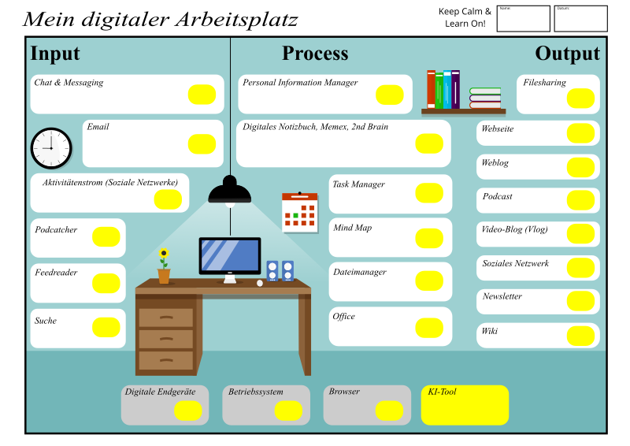

Einsatz generativer Künstlicher Intelligenz (GenAI) in der Wissensarbeit
saptf24, Simon Dückert (Cogneon)
Die Wissensgesellschaft
Wir befinden uns (immer noch) im Übergang von Industrie- zu Wissensgesellschaft. Eine Wissensgesellschaft ist eine Gesellschaft, in der bestehende Regeln und Normen durch Lernprozesse kontinuierlich infrage gestellt werden (Heidenreich, M.).

Produktivität von Wissensarbeit nach Drucker
- Die Produktivität von Wissensarbeit erfordert, dass wir uns die Frage stellen: "Was ist die Aufgabe?"
- Sie verlangt, dass wir den Wissensarbeiter:innen selbst die Verantwortung für ihre Produktivität übertragen. Sie müssen sich selbst managen. Dafür benötigen sie Autonomie.
- Kontinuierliche Innovation muss Teil der Arbeit, der Aufgabe und der Verantwortung von Wissensarbeiter:innen sein.
- Wissensarbeit erfordert kontinuierliches Lernen auf Seiten der Wissensarbeiter:innen, aber auch kontinuierliche Weitergabe von Wissen.
- Die Produktivität des Wissensarbeiters ist nicht - zumindest nicht in erster Linie - eine Frage der Quantität des Outputs. Die Qualität ist mindestens ebenso wichtig.
- Schließlich erfordert die Produktivität von Wissensarbeiter:innen, dass sie als "Aktivposten" und nicht als "Kostenfaktor" betrachtet und behandelt werden. Sie setzt voraus, dass die Wissensarbeiter:innen für die Organisation arbeiten wollen, lieber als für jede anderen Option.
Gestaltung von Wissensarbeit mit KI
(Mosaik der Arbeitsgestaltung nach Jäger, eigene Darstellung)
BIBB: Tätigkeiten in wissensintensiven Berufen
- Forschen und Entwickeln
- Recherchieren und Dokumentieren
- Ausbilden und Unterrichten
- Informationen sammeln
- Beraten und Informieren
- Organisieren fremder Arbeitsprozesse
Bei welchen Aufgaben solltest Du anfangen?
Laut HBR-Artikel Where Should Your Company Start with GenAI? sind von KI besonders Aufgaben betroffen, die mit Text, Bildern, Zahlen und Multimedia zu tun haben und deren Grad der Digitalisierung hoch ist.

KI-Tools & der Digitale Arbeitsplatz

KI-Tools & der Digitale Arbeitsplatz

Die Praxis ist übersichtlicher (Umfrage #kimooc24)

Was machen Menschen wirklich, wirklich mit KI?

- Technical Assistance & Troubleshooting (23%)
- Content Creation & Editing (22%)
- Personal & Professional Support (17%)
- Learning & Education (15%)
- Creativity & Recreation (13%)
- Research, Analysis & Decision Making (10%)
2 Tipps für Eure KI-Lernreise

|